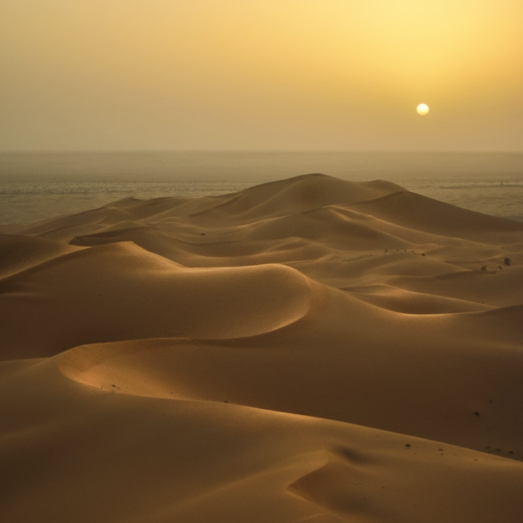

Uma emocionante descoberta arqueólogica
veio à luz recentemente, quando uma equipe de pesquisadores desenterrou os segredos de uma cidade perdida há muito tempo sob as vastas dunas do deserto. A cidade, que remonta a uma era esquecida da história, está fornecendo insights valiosos sobre as civilizações antigas.
A equipe de arqueólogos e historiadores passou anos investigando as lendas locais que sugeriam a existência de uma antiga cidade enterrada sob as areias. Com o uso de tecnologias avançadas de mapeamento e escavação, eles finalmente encontraram os primeiros vestígios da cidade soterrada.
>"É uma descoberta absolutamente empolgante”, disse a líder da equipe, Dra. Emily Collins. "Estamos desenterrando estruturas que revelam um estilo arquitetônico único, inscrições em pedra e até mesmo artefatos surpreendentes."
Os artefatos recuperados incluem cerâmicas finamente trabalhadas, joias ornamentadas e uma série de tabuletas de argila com inscrições que podem fornecer pistas vitais sobre o cotidiano dos habitantes da cidade.
A datação por carbono dos objetos encontrados sugere que a cidade existiu aproximadamente há 2500 anos, lançando luz sobre um período pouco documentado da história da região. Os especialistas acreditam que a cidade pode ter sido um importante centro comercial naquela época, conectando rotas comerciais antigas.
A descoberta
já está atraindo atenção internacional, com especialistas de todo o mundo ansiosos para examinar os achados em detalhes. O local da escavação está sendo cuidadosamente preservado e documentado, à medida que mais informações emergem a cada dia.
Embora muitos mistérios ainda permaneçam, essa descoberta arqueológica já está mudando nossa compreensão do passado e nos lembrando de quão profundas são as raízes da história humana.